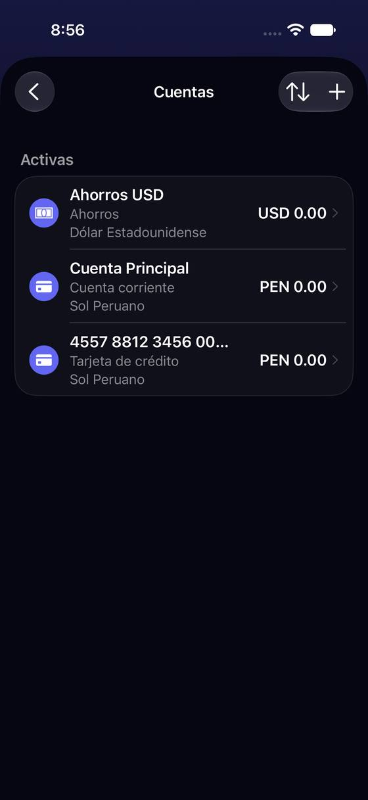

Si la cuenta tiene número, la lista de Cuentas enseña el número en vez del nombre
Hoy
Capturas del simulador (app de origin/2.3, semillas de prueba). Pasos hoy: —


De dónde sale
- Captura Capturas c14, c16 y c17 (número ficticio).
- Código
AccountsSettingsListView.listAccountRowyaccountRow:primaryTextes el número si no está vacío (líneas 241-244 y 303-306 del cuerpo). - Código El número solo se usa ahí y en el formulario (búsqueda de
accountNumberenYala/App: 3 ficheros).
Las opciones
De 3 a 5 alternativas con el mismo caso. Desliza cada recorrido; el anillo cian marca dónde toca Lucía.
El nombre siempre arriba; el número, enmascarado al lado
La fila de Ajustes › Cuentas dice siempre el nombre; si hay número, debajo y solo sus últimos cuatro dígitos («•••• 0019»).
A favor
- Lucía reconoce su tarjeta por el nombre que le puso.
- El número completo no queda a la vista.
En contra
- Ninguno relevante; si dos tarjetas se llaman igual, el sufijo las distingue.
El campo pide «Últimos 4 dígitos» y dice para qué
El campo «Número de cuenta» pasa a «Últimos 4 dígitos (opcional)», acepta solo cuatro números y explica que sirve para reconocer la tarjeta en los avisos del banco.
A favor
- Nadie escribe el número completo de su tarjeta en una app de notas de gasto.
- Explica para qué sirve.
En contra
- Quien ya guardó números completos los conserva hasta editar (se puede recortar al mostrar, como E1).
El número sale del alta y va a «Más opciones»
Al crear, el formulario ya no enseña «Número de cuenta»; queda plegado en «Más opciones», junto a «Excluir de las estadísticas».
A favor
- Alta más corta (P3, P2).
- Menos tentación de escribir datos sensibles.
En contra
- Quien sí lo quiere lo busca.
- No arregla la lista de Ajustes por sí sola.
Lado a lado
La última pantalla de cada recorrido, frente a hoy.
Comparación
| Opción | Pasos para el caso (maqueta) | Esfuerzo | Riesgo | Reabre |
|---|---|---|---|---|
| Hoy | — | — | — | — |
| E1 · El nombre siempre arriba; el número, enmascarado al lado | 0 (es lectura) | bajo | bajo | — |
| E2 · El campo pide «Últimos 4 dígitos» y dice para qué | Igual que hoy | bajo | bajo | — |
| E3 · El número sale del alta y va a «Más opciones» | 1 campo menos | bajo | bajo | — |
Lente de perfiles
Perfiles simulados, no entrevistas Los siete perfiles de la revisión del usuario nuevo, usados como lentes. riesgo alto de trabarse · medio · bajo.
| Perfil | Hoy | E1 | E2 | E3 |
|---|---|---|---|---|
| P1 · Migrante de Excel | no reconoce su cuenta | — | — | lo busca |
| P2 · Principiante abrumado | — | — | sabe qué poner | — |
| P3 · Anotador rápido que no lee | — | — | lo salta | — |
| P4 · Experto de otra app | — | — | — | — |
| P5 · Llega por una invitación de grupo | — | — | — | — |
| P6 · Varias monedas y tarjeta | dos tarjetas = dos números | dos Visa distinguibles | — | — |
| P7 · Texto grande, a veces en iPad | número truncado | — | — | — |
Recomendación: E1
Es el arreglo de la lista y cuesta casi nada; con E2 el campo deja de pedir el número completo. Juntas, la cuenta se llama igual en todas partes y no queda un dato sensible a la vista.
Qué decide Jürgen
- ¿La lista enseña siempre el nombre, con •••• y los últimos cuatro (E1)?
- ¿El campo pide solo los últimos 4 dígitos (E2)? ¿Se recortan los números completos ya guardados?
Revisión por vistas 2.3 · Cuentas, tarjetas, categorías, etiquetas y divisas. Maquetas en HTML con datos ficticios: no son la app. Pasos contados sobre las maquetas; los de «Hoy», en el simulador o en el código citado.